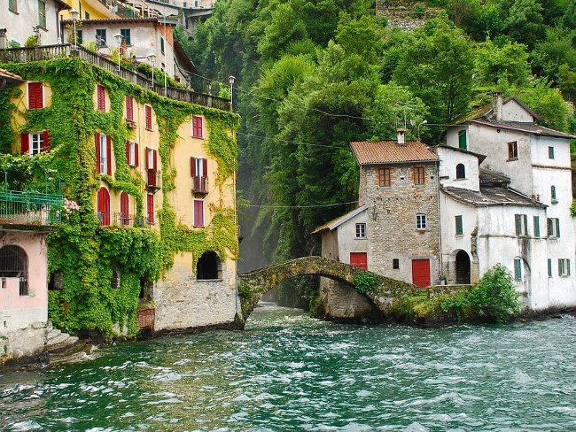
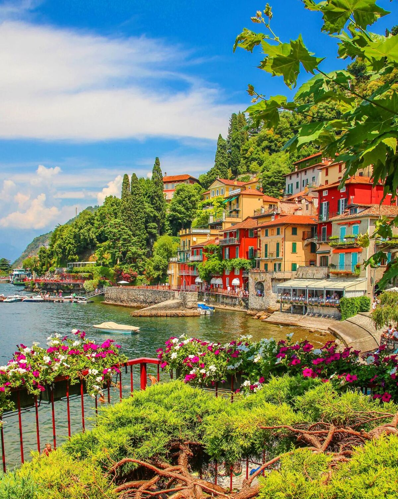
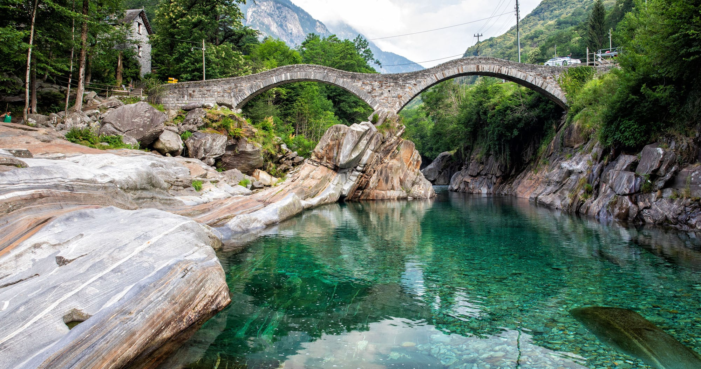
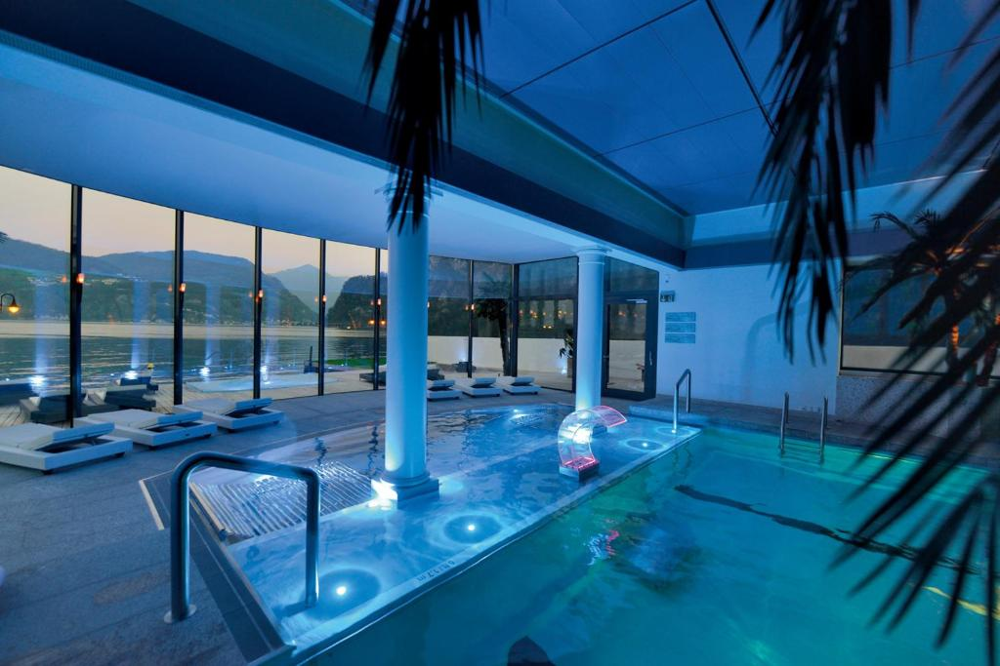
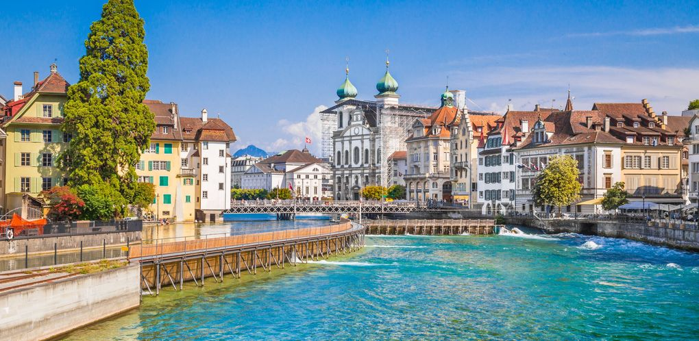
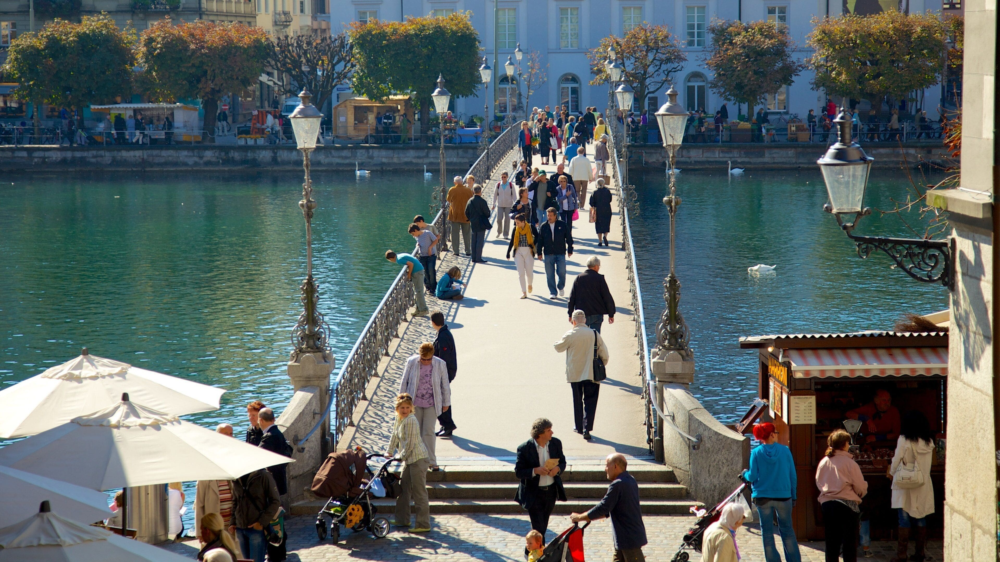
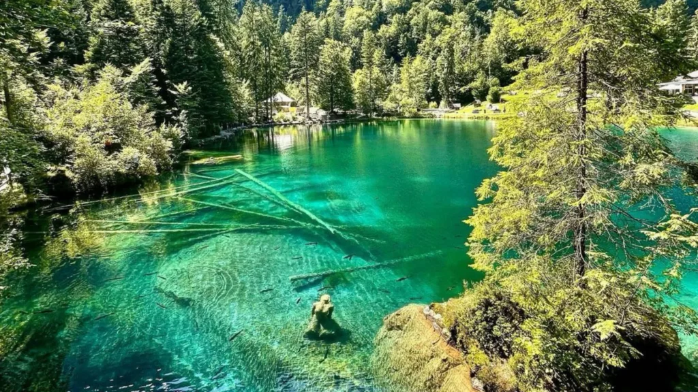

Guía personal de viaje · 2025
Lago Como
& Suiza
4 — 12 Julio 2025
· 9 días
· Como · Lucerna · Interlaken
· Coche desde Milán
Explora
Solo tenemos medio día, pero bien aprovechado: baño en la garganta de Nesso, paseo por el pueblo más fotogénico del lago y cruce en ferry a Bellagio.


El día que más esperabais. Una poza de agua esmeralda bajo un puente medieval, en un valle salvaje del Ticino suizo.

Agua verde esmeralda, rocas blancas pulidas por el río, un puente medieval de doble arco. El lugar más deseado del viaje.
Una grieta en la roca caliza con el río Aare de azul eléctrico. Excursión de mañana, tarde libre en el Seehotel Pilatus.

El día de recargar. Mañana por la ciudad medieval más bonita de Suiza, tarde entera en el spa del hotel.


Trayecto tranquilo de mañana, instalación en el apartamento y primer atardecer épico desde el mirador sobre los dos lagos.

El día más completo del viaje. Tirolina sobre el abismo, pasarela colgante con el Eiger de frente y el lago alpino más icónico de los Alpes.
El Eiger, el Mönch y el Finsteraarhorn reflejados enteros en el agua quieta. Una hora de ruta fácil desde First. El lago que no cabe en ninguna foto.
El día de los lagos imposibles. El azul más profundo de Suiza y después la ruta mirador sobre el Oeschinensee turquesa.

Agua turquesa rodeada de paredes rocosas de 3000m. Uno de los lagos más bonitos de Europa — y vais a verlo desde arriba.
El valle que inspiró Rivendell a Tolkien. 72 cascadas, las más grandes de Europa dentro de la roca, y cena al atardecer junto al lago.
Paredes verticales de 300 metros, cascadas cayendo por todas partes, prados verdes perfectos. Tolkien visitó este lugar en 1911 y fue la inspiración directa de Rivendell.
Ruta por el túnel del San Gottardo, pasando de nuevo por el Ticino que visitasteis a la ida.
Pase de transporte para la región Jungfrau · 3 a 8 días consecutivos · jungfrau.ch
El río tiene corrientes y remolinos invisibles desde la superficie. Bañaos solo en las pozas señalizadas junto al Ponte dei Salti. Nunca donde el río se estrecha. Respetar siempre las señales: cada verano hay accidentes por imprudencias.
Llegad antes de las 10:30. El parking de día (500m del puente, 10 CHF) es vuestra mejor opción. El del pueblo tiene límite de 3h.
El parking junto a la telecabina está en obras y siempre lleno en julio. Ir en coche es perder el tiempo. Tren desde Interlaken Ost. Comprad el billete de gondola online con antelación.
Desde 2025 la web recomienda reservar el teleférico online para julio (40 CHF adulto). El parking de Kandersteg se llena antes de las 12:00. Llegad antes de las 11:30. Zona restringida en orilla sureste: prohibición absoluta de acceso.
Parque natural protegido. La visita es contemplativa: paseo perimetral y barca de fondo de cristal. Sin baño.
Abiertas de 9:00 a 17:00. Última entrada antes de las 17:00. No lo dejéis para el final de la tarde.
En julio pueden aparecer tormentas en los Alpes a partir de las 15:00-16:00. Los días de excursión a altura, comprobad la webcam y la previsión antes de salir. Bajad siempre antes de las 16:00 en días de inestabilidad.
Solo 6-7 coches junto al Orrido. Llegad antes de las 13:00. Hay un segundo parking algo más arriba si el primero está lleno.
| Día | Fecha | Destino principal | Tipo | Intensidad | Base |
|---|---|---|---|---|---|
| Día 4 | Sáb 4 Jul | Nesso · Varenna · Bellagio | Lagos · Pueblo | Media | Como |
| Día 5 | Dom 5 Jul | ⭐ Lavertezzo · Poza Verzasca | Baño · Tránsito | Media-Alta | → Lucerna |
| Día 6 | Lun 6 Jul | Aareschlucht · Tarde spa | Garganta · Hotel | Media | Lucerna |
| Día 7 | Mar 7 Jul | Lucerna casco histórico · Spa | Ciudad · Descanso | Baja | Lucerna |
| Día 8 | Mié 8 Jul | Tránsito · Harder Kulm atardecer | Cambio de base | Baja | → Interlaken |
| Día 9 | Jue 9 Jul | ⭐ Grindelwald First · Tirolina · Bachalpsee | Ruta alpina | Alta | Interlaken |
| Día 10 | Vie 10 Jul | ⭐ Blausee · Oeschinensee · Mirador | Lagos · Senderismo | Alta | Interlaken |
| Día 11 | Sáb 11 Jul | Lauterbrunnen · Trümmelbach · Cena | Cascadas | Media | Interlaken |
| Día 12 | Dom 12 Jul | Interlaken → Milán | Vuelta | — | Milán |